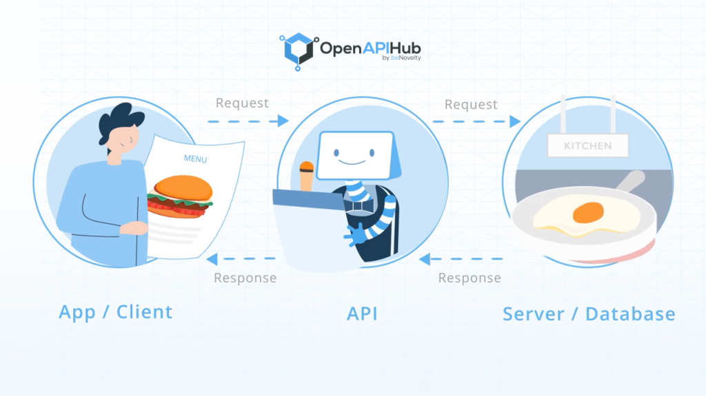
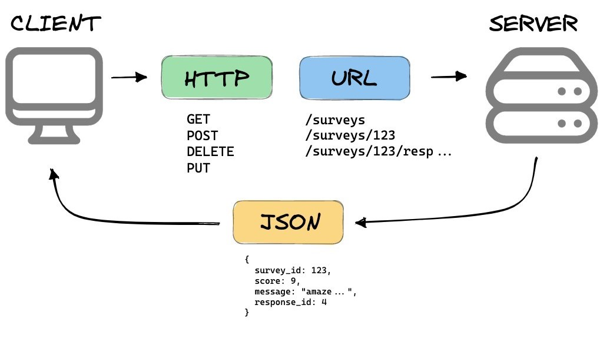
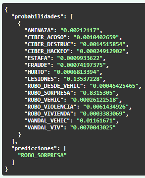

| Delito | Cantidad |
|---|---|
| CIBER_DESTRUC | 34 |
| NO_CLASIFICABLE | 219 |
| ROBO_VEHIC | 415 |
| LESIONES | 990 |
| CIBER_HACKEO | 1414 |
| CIBER_ACOSO | 1422 |
| ROBO_SORPRESA | 2624 |
| VANDAL_VEHIC | 2956 |
| ROBO_VIOLENCIA | 3020 |
| VANDAL_VIV | 3033 |
| FRAUDE | 3423 |
| ROBO_VIVIENDA | 3541 |
| AMENAZA | 3766 |
| ESTAFA | 4127 |
| ROBO_DESDE_VEHIC | 5349 |
| HURTO | 5705 |

Proyecto Ciencia de Datos Modelo y API predicción de delitos Encuesta Nacional Urbana de Seguridad Ciudadana
Enero 2024
Contenidos
- Descripción del modelo 🔎
- Contexto
- Métricas
- ¿Qué es una API?
- API modelo delitos
- Uso de la API en el browser
- Uso programático de la API 💻✍️
- ¿Cómo realizamos predicciones?
- ¿Cómo extraemos los datos de entrenamiento y testeo?
Descripción del modelo | Contexto (1/3)
En cada versión de la ENUSC, en promedio, se debe clasificar y validar al rededor de 10500 relatos de delitos.
Este proceso de revisión actualmente se realiza “manualmente”, en donde los integrantes de ENUSC clasifican aproximadamente 500 relatos diarios.
Dada esta situación, se creó un modelo de clasificación que asigna un delito, con cierta probabilidad, a cada relato entregado. Lo cual permite ayudar al equipo ENUSC en está revisión.
Descripción del modelo | Contexto (2/3)
Para este modelo de clasificación, se utilizaron los 15 tipos de delitos disponibles con una separación train-test del 80%-20%.
Se ajustó un modelo con redes neuronales usando una capa de embeddings y LSTM. Lo que nos permite captar la semántica de los relatos y procesar la característica base secuencial que posee nuestro lenguaje.
Dada la existencia de relatos cortos no informativos tales como:
sin relato, julio 2019, error al contestar, ocurrido en octubre,
denunció a fiscalia en junio de este año, no paso a mayores, etcse decidió crear un segundo modelo experimental con 16 clases; 15 delitos disponibles más la clase NO_CLASIFICABLE.
Descripción del modelo | Contexto (3/3)
Modelo de 15 clases: 33462 observaciones de entrenamiento y 8357 observaciones de testeo.
Modelo de 16 clases: 33637 observaciones de entrenamiento y 8401 observaciones de testeo.
Descripción del modelo | Métricas (1/2)
Métricas modelo con 15 clases en set de testeo:
Accuracy = 0.911
| Clases | precision | recall | f1-score | support |
|---|---|---|---|---|
| AMENAZA | 0.949 | 0.930 | 0.939 | 753 |
| CIBER_ACOSO | 0.957 | 0.933 | 0.945 | 284 |
| CIBER_DESTRUC | 1.000 | 0.143 | 0.250 | 7 |
| CIBER_HACKEO | 0.877 | 0.958 | 0.916 | 283 |
| ESTAFA | 0.948 | 0.935 | 0.941 | 825 |
| FRAUDE | 0.940 | 0.959 | 0.949 | 685 |
| HURTO | 0.865 | 0.862 | 0.863 | 1141 |
| LESIONES | 0.896 | 0.874 | 0.885 | 198 |
| ROBO_DESDE_VEHIC | 0.913 | 0.947 | 0.930 | 1070 |
| ROBO_SORPRESA | 0.862 | 0.810 | 0.835 | 525 |
| ROBO_VEHIC | 0.889 | 0.675 | 0.767 | 83 |
| ROBO_VIOLENCIA | 0.917 | 0.909 | 0.913 | 604 |
| ROBO_VIVIENDA | 0.858 | 0.920 | 0.888 | 701 |
| VANDAL_VEHIC | 0.936 | 0.895 | 0.915 | 591 |
| VANDAL_VIV | 0.941 | 0.946 | 0.943 | 607 |
\[ \]
Descripción del modelo | Métricas (2/2)
Métricas modelo con 16 clases en set de testeo:
Accuracy = 0.906
| Clases | precision | recall | f1-score | support |
|---|---|---|---|---|
| AMENAZA | 0.944 | 0.911 | 0.927 | 753 |
| CIBER_ACOSO | 0.949 | 0.919 | 0.934 | 284 |
| CIBER_DESTRUC | 0.667 | 0.286 | 0.400 | 7 |
| CIBER_HACKEO | 0.888 | 0.954 | 0.920 | 283 |
| ESTAFA | 0.963 | 0.915 | 0.938 | 825 |
| FRAUDE | 0.925 | 0.955 | 0.940 | 685 |
| HURTO | 0.851 | 0.883 | 0.866 | 1141 |
| LESIONES | 0.859 | 0.894 | 0.876 | 198 |
| NO_CLASIFICABLE | 0.796 | 0.977 | 0.878 | 44 |
| ROBO_DESDE_VEHIC | 0.921 | 0.932 | 0.927 | 1070 |
| ROBO_SORPRESA | 0.875 | 0.813 | 0.843 | 525 |
| ROBO_VEHIC | 0.787 | 0.843 | 0.814 | 83 |
| ROBO_VIOLENCIA | 0.878 | 0.907 | 0.893 | 604 |
| ROBO_VIVIENDA | 0.873 | 0.876 | 0.875 | 701 |
| VANDAL_VEHIC | 0.932 | 0.902 | 0.917 | 591 |
| VANDAL_VIV | 0.947 | 0.934 | 0.940 | 607 |
\[ \]
¿Qué es una API?
Las APIs (Application Programming Interface) son piezas de código que permiten que dos aplicaciones o computadoras se comuniquen.
Se podría decir que la API es un intermediario que permite a que un programa le pida cosas específicas a otro programa, sin necesidad de conocer en detalle cómo funciona este otro.
En la práctica, nos permiten acceder desde un programa en nuestro computador -como Python o R- a los datos de algún servicio, al que de otra manera no tendríamos acceso o bien tendríamos que hacerlo pasando por la página web, lo que implica un proceso más costoso para el usuario y para el proveedor.
Ejemplos clásicos de APIs son: API de twitter para recolectar tuits, iniciar sesión con Google, API de la CMF para valor UF, monedas extranjeras, IPC, etc.
¿Qué es una API?
La analogía del restaurant es práctica para entender la lógica de las API:
- El usuario/a sería el cliente
- La API sería la mesera
- La información que nos puede disponibilizar la API es el menú
- Los servidores con sus bases de datos serían la cocina
Por lo tanto:
- El usuario le pide a la API una información específica (el plato) en base a lo disponible en el menú. Luego, los servidores/cocina se encargan de obtener esa información desde las bases de datos y finalmente la API le entrega el plato/información al usuario, si es que este es parte del menú.

¿Qué es una API?

Uso y motivación
Esta API permite abstraer la clasificación de delitos de la programación, facilitando el acceso a cualquier persona usuaria que siga el manual de uso.
La API tiene un objetivo principal y dos secundarios:
- Permitir, de manera sencilla, la predicción de categorías de delito, en base a los modelos Deep Learning que fueron desarrollados.
- Entregar acceso restringido a los datos de entrenamiento de los modelos.
- Entregar métricas de calidad de predicción de los modelos.
La API
La API está compuesta por 3 endpoints principales y 2 endpoints asociados a la autentificación - Un endpoint es una ruta dentro de la API que tiene asignada una tarea específica
/predecir: Se ingresa lista con glosas de delitos a predecir y un parámetrotipo_modeloque puede tomar valoresmodelo_15_clasesomodelo_16_clasesy devuelve un.jsoncon dos llaves por cada glosa:probabilidadesypredicciones.- La primera contiene las probabilidades calculadas asociadas a cada delito, junto con el nombre del delito.
- La segunda contiene el nombre del delito que tuvo la probabilidad más alta calculada por el modelo seleccionado. Esta se devuelve en formato
.json.jsones una forma estándar y flexible de dar formato y estructura a los datos, facilitando su transmisión
La API
Resultado:

La API
/get_training_data: retorna los datos de entrenamiento del modelo, en un.jsoncon 4 llaves:X_test,X_train,y_test,y_train.OJO: el uso de este endpoint requiere autentificación. Veremos en la demostración cómo autentificar.
No mostraremos el resultado, ya que son datos confidenciales.
/get_model_metrics: Entrega precision, recall, f1-score y support para cada una de las clases, para un modelo específico. El parámetrotipo_modelovuelve a definir qué modelo se selecciona.
La API
Resultado:
{ “data”: “[{"Delito":"AMENAZA","precision":0.9485094851,"recall":0.9296148738,"f1-score":0.9389671362,"support":753.0},{"Delito":"CIBER_ACOSO","precision":0.9566787004,"recall":0.9330985915,"f1-score":0.944741533,"support":284.0},{"Delito":"CIBER_DESTRUC","precision":1.0,"recall":0.1428571429,"f1-score":0.25,"support":7.0},{"Delito":"CIBER_HACKEO","precision":0.8770226537,"recall":0.9575971731,"f1-score":0.9155405405,"support":283.0},{"Delito":"ESTAFA","precision":0.9483394834,"recall":0.9345454545,"f1-score":0.9413919414,"support":825.0},{"Delito":"FRAUDE","precision":0.9399141631,"recall":0.9591240876,"f1-score":0.9494219653,"support":685.0},{"Delito":"HURTO","precision":0.8653169014,"recall":0.8615249781,"f1-score":0.8634167765,"support":1141.0},{"Delito":"LESIONES","precision":0.896373057,"recall":0.8737373737,"f1-score":0.8849104859,"support":198.0},{"Delito":"ROBO_DESDE_VEHIC","precision":0.9134355275,"recall":0.946728972,"f1-score":0.9297843047,"support":1070.0},{"Delito":"ROBO_SORPRESA","precision":0.8620689655,"recall":0.8095238095,"f1-score":0.8349705305,"support":525.0},{"Delito":"ROBO_VEHIC","precision":0.8888888889,"recall":0.6746987952,"f1-score":0.7671232877,"support":83.0},{"Delito":"ROBO_VIOLENCIA","precision":0.9165275459,"recall":0.9089403974,"f1-score":0.9127182045,"support":604.0},{"Delito":"ROBO_VIVIENDA","precision":0.857712766,"recall":0.9201141227,"f1-score":0.887818307,"support":701.0},{"Delito":"VANDAL_VEHIC","precision":0.9362831858,"recall":0.8950930626,"f1-score":0.9152249135,"support":591.0},{"Delito":"VANDAL_VIV","precision":0.9409836066,"recall":0.9456342669,"f1-score":0.9433032046,"support":607.0},{"Delito":"accuracy","precision":0.910853177,"recall":0.910853177,"f1-score":0.910853177,"support":0.910853177},{"Delito":"macro avg","precision":0.9165369953,"recall":0.8461888734,"f1-score":0.8586222087,"support":8357.0},{"Delito":"weighted avg","precision":0.9112422194,"recall":0.910853177,"f1-score":0.9103261222,"support":8357.0}]” }
La API
/login: permite a una persona usuaria autentificarse en la API. Actualmente, este endpoint es solo útil para superusuarios que quieran crear un usuario nuevo con o sin privilegios de superusuario./register: permite crear usuarios nuevos a un superusuario autentificado. Los usuarios creados podrán tener privilegios de superusuario si quien los crea así lo desea.
- Si el usuario ya existía se reemplazará su contraseña.
Uso de la API en el browser
Al entrar a la URL, se nos envía directamente a la documentación, que, junto con explicar cada endpoint, nos permite probarlos.
Uso programático de la API | ¿Cómo realizamos predicciones?
Conexión desde R:
# cargar paquetes
library(httr)
library(jsonlite)
# ingresar la url API
url <- 'http://10.90.2.47:3123/docs'
# indicar tipo de modelo: 'modelo_15_clases' o 'modelo_16_clases':
query <- list(tipo_modelo = "modelo_15_clases")
# indicar relatos a clasificar:
body <- list("Iba hablando por telefono y me arrancaron el celular de las manos",
'ingresaron a mi casa rompuedo la chapa, me amenazaron y robaron joyas')
# realizar el requerimiento:
respuesta <- POST(url, # url API
path = '/predecir', # ruta, NO MODIFICAR
body = body, # relatos a clasificar
query = query, # modelo
encode = "json")
# desenvolvemos las predicciones anidadas JSON de la lista a R
prediccion <- fromJSON(content(respuesta, 'text', encoding = 'UTF-8'))
# revisamos la variable
str(prediccion)
# transformando de caracter a numerico
prediccion$probabilidades <- apply(prediccion$probabilidades, 2, as.numeric) %>%
as.data.frame()
# extraemos la probabilidad maxima alcanzada:
prediccion$probabilidades <- prediccion$probabilidades %>%
mutate(prob_max = apply(prediccion$probabilidades, 1, max, na.rm=TRUE))Uso programático de la API | ¿Cómo extraemos los datos train-test?
Para obtener los datos de entrenamiento y testeo, es necesario que los usuarios tengan una cuenta con acceso al endpoint, pues se utiliza un sistema de autenticación mediante tokens, el cual posee una duración limitada.
Conexión desde R:
- Obteniendo token\(^*\):
# Ingresando información del usuario con variables de ambiente:
usuario <- list(username = Sys.getenv("USERNAME"),
password = Sys.getenv("PASSWORD"))
# Realizar requerimiento para obtener el token de acceso del usuario:
resp_token <- POST(url = 'http://10.90.2.47:3123/token',
body = usuario,
authenticate(usuario$username, usuario$password))
# Extraer respuesta y token:
token <- content(resp_token)
token <- paste(token$token_type, token$access_token)- Obteniendo datos de entrenamiento y testeo:
respuesta <- GET(url,
path = '/get_training_data',
query = query, # modelo_15_clases / modelo_16_clases
add_headers('Authorization' = token))
## desenvolvemos los datos tipos JSON a R
data <- fromJSON(content(respuesta, 'text', encoding = "UTF-8"))
## volvemos a transformar los datos anidados JSON de la lista a R
y_test <- fromJSON(data$y_test)
X_test <- fromJSON(data$X_test)\(^*\) Para editar nuestras variables de ambiente del archivo .Renviron en nuestro proyecto, podemos usar la función usethis::edit_r_environ('project'), la cual nos abrirá un archivo .Renviron. Una vez realizadas las modificaciones, reiniciamos la sesión de R para observar los cambios.
En resumen
- La API permite predecir delitos de manera sencilla
- De manera “didáctica” en la documentación y de manera programática
- Cuenta con autentificación para resguardar datos de carácter privado
- Además, permite acceder a métricas del modelo y los datos de entrenamiento de este

Proyecto Ciencia de Datos Modelo y API predicción de delitos Encuesta Nacional Urbana de Seguridad Ciudadana
Enero 2024